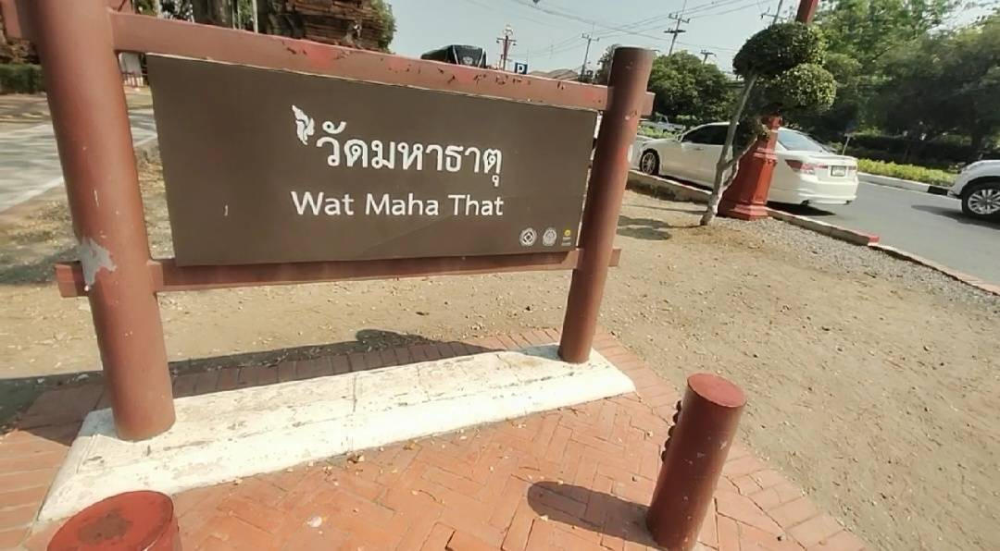

วัดมหาธาตุ จังหวัดพระนครศรีอยุธยา
วัดมหาธาตุเป็นพระอารามหลวง ตั้งอยู่ใกล้วัดราชบูรณะ ในบริเวณอุทยานประวัติศาสตร์พระนครศรีอยุธยา
สร้างในสมัย สมเด็จพระบรมราชาธิราชที่ 1ขุนหลวงพะงั่ว เมื่อปี พ.ศ. 1917 แต่ไม่แล้วเสร็จ ทรงเสด็จสวรรคตเสียก่อน
และได้สร้างเพิ่มเติมจนเสร็จ ในสมัย สมเด็จพระราเมศวร โดยได้โปรดเกล้าฯ ให้สร้างพระปรางค์ประธาน และอัญเชิญ
พระบรมสารีริกธาตุมาบรรจุไว้ใต้ฐานพระปรางค์ประธานของวัดมหาธาตุ เมื่อปี พ.ศ. 1927
การที่เราได้ไปเที่ยวไปชมที่วัดมหาธาตุหรือวัดต่างๆจะทำให้เรามีจิตใจที่สงบ และทำให้เราได้ศึกษาในพระพุทธศาสนา
และความเป็นมาของวัด ซึ่งวัดมหาธาตุ ก็ได้เป็นวัดหนึ่งที่อยู่ในจังหวัดพระนครศรีอยุธยา เป็นวัดแห่งมรดกโลกที่สำคัญ
และได้เป็นวัดที่มีชาวต่างชาติมาชมไม่น้อย วัดมหาธาตุเป็นวัดที่มีขนาดใหญ่ เป็นที่ประดิษฐานองค์พระบรมสารีริกธาตุ
แล้วยังถือเป็นวัดที่เป็นศูนย์กลางของเมืองและเป็นสถานที่จัดพระราชพิธีต่าง ๆ ในสมัยกรุงศรีอยุธยาด้วย
| คนไทย | ชาวต่างชาติ | นักศึกษา |
|---|---|---|
| 10.บาท | 50.บาท | ฟรี |
1. แต่งกายสุภาพ
2. สวมเสื้อแขนยาว
3. ไม่สวมเสื้อผ้าที่รัดรูป
4. สวมกระโปรงหรือกางเกงขายาว

วีดีโอจากช่อง TNN ช่อง 16์
| อาหาร | ธรรมชาติ | ความเป็นมรดกโลก |
|---|---|---|
| มีของฝากมากมาย | อากาศดี | รู้ถึงความเป็นมรดกโลก |
| มีร้านคาเฟ่ | ร่มรื่น | ได้รู้ประวัติของวัด |
อ้างอิง: